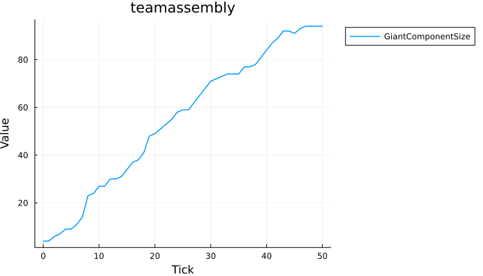
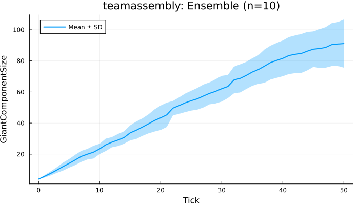
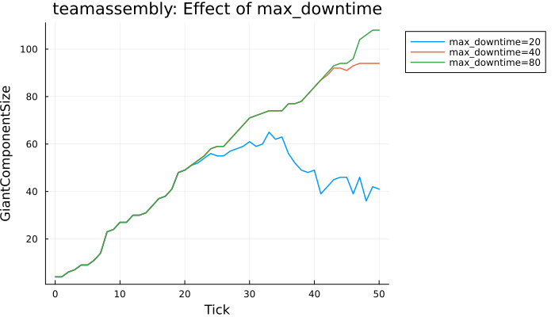

Team Assembly
Overview
WHAT IS IT?
This model of collaboration networks illustrates how the behavior of individuals in assembling small teams for short-term projects can give rise to a variety of large-scale network structures over time. It is an adaptation of the team assembly model presented by Guimera, Uzzi, Spiro & Amaral (2005). The rules of the model draw upon observations of collaboration networks ranging from Broadway productions to scientific publications in psychology and astronomy.
Many of the general features found in the networks of creative enterprises can be captured by the Team Assembly model with two simple parameters: the proportion of newcomers participating in a team and the propensity for past collaborators to work again with one another.
HOW IT WORKS
At each tick a new team is assembled. Team members are either inexperienced “newcomers” — people who have not previously participated in any teams – or are established “incumbents” — experienced people who have previously participated on a team. Each member is chosen sequentially. The P slider gives the probability that a new team member will be an incumbent. If the new member is not a newcomer, then with a probability given by the Q slider, an incumbent will be chosen at random from the pool of previous collaborators of an incumbent already on the team. Otherwise, a new member will just be randomly chosen from all incumbents. When a team is created, all members are linked to one another. If an agent does not participate in a new team for a prolonged period of time, the agent and her links are removed from the network.
Agents in a newly assembled team are colored blue if they are newcomers and yellow if they are incumbents. Smaller grey circles represent those that are not currently collaborating. Links indicate members’ experience at their most recent time of collaboration. For example, blue links between agents indicate that two agents collaborated as newcomers. Green and yellow links correspond to one-time newcomer-incumbent and incumbent-incumbent collaborations, respectively. Finally, red links indicate that agents have collaborated with one another multiple times.
THINGS TO NOTICE
The model captures two basic features of collaboration networks that can influence or stifle innovation in creative enterprises by varying the values of P and Q. First is the distribution of the type of the connection between collaborators, which can be seen in the LINK COUNTS plot. An overabundance of newcomer-newcomer (blue) links might indicate that a field is not taking advantage of experienced members. On the other hand, a multitude of repeat collaborations (red) and incumbent-incumbent (yellow) links may indicate a lack of diversity in ideas or experiences.
Second is the overall connectivity of the collaboration network. For example, many academic fields are said to be comprised of an “invisible college” of loosely connected academic communities. By contrast, patent networks tend to consist of isolated clusters or chains of inventors. You can see one measure of this on the % OF AGENTS IN THE GIANT COMPONENT plot – the giant component being the size of the largest connected chain of collaborators.
You can also see the different emergent topologies in the display. New collaborations or synergy among teams naturally tend to the center of the display. Teams or clusters of teams with few connections to new collaborations naturally “float” to the edges of the world. Newcomers always start in the center of the world. Incumbents, which are chosen at random, may be located in any part of the screen. Thus, collaborations amongst newcomers and or distant team components tend toward the center, and disconnected clusters are repelled from the centered.
Finally, note that the structure of collaboration networks in the model can change dramatically over time. Initially, only new teams are generated; the collaborative field has not existed long enough for members to retire. However, after a period of time (MAX-DOWNTIME), inactive agents begin to retire, and the number of agents becomes relatively stable – the emergent effects of P and Q become more apparent in this equilibrium stage. Note also that the end of the growth stage is often marked by a drop in the connectivity of the network.
THINGS TO TRY
Keeping Q fixed at 40%, how does the structure of collaboration networks vary with P? For example, which values of P produce isolated clusters of agents? As P increases, how do these clusters combine to form more complex structures? Over which values of P does the transition from a disconnected network to a fully connected network occur?
Set P to 40% and Q to 100%, so that all incumbents choose to work with past collaborators. Press SETUP, then GO, and let the model run for about 100 steps after the number of agents in the network stops growing. What happens to the connectivity of the collaboration network? Keeping P fixed, continue to lower Q in decrements of 5-10%.
Try keeping P and Q constant and varying TEAM-SIZE. How does the global structure of the network change with larger or smaller team sizes? Under which ranges of P and Q does this relation hold?
EXTENDING THE MODEL
What happens when the size of new teams are not constant? Try changing the rules so that team sizes vary randomly from a distribution or increase over time.
How do P and Q relate to the global clustering coefficient of the network? You may wish to use code from the Small Worlds model in the Networks section of Sample Models.
Can you modify the model so that agents are more likely to collaborate with collaborators of collaborators?
Collaboration networks can alternatively be thought of as a network consisting of individuals linked to projects. For example, one can represent a scientific journal with two types of nodes, scientists and publications. Ties between scientists and publications represent authorship. Thus, links between a publication multiple scientists specify co-authorship. More generally, a collaborative project may be represented one type of node, and participants another type. Can you modify the model to assemble teams using bipartite networks?
NETLOGO FEATURES
Though it is not used in this model, there exists a network extension for NetLogo that you can download at: https://github.com/NetLogo/NW-Extension.
RELATED MODELS
Preferential Attachment - gives a generative explanation of how general principles of attachment can give rise to a network structure common to many technological and biological systems.
Giant Component - shows how critical points exist in which a network can transition from a rather disconnected topology to a fully connected topology
CREDITS AND REFERENCES
This model is based on: R Guimera, B Uzzi, J Spiro, L Amaral. Team Assembly Mechanisms Determine Collaboration Network Structure and Team Performance. Science 2005, V308, N5722, p697-702 https://amaral.northwestern.edu/media/publication_pdfs/Guimera-2005-Science-308-697.pdf
HOW TO CITE
If you mention this model or the NetLogo software in a publication, we ask that you include the citations below.
For the model itself:
- Bakshy, E. and Wilensky, U. (2007). NetLogo Team Assembly model. http://ccl.northwestern.edu/netlogo/models/TeamAssembly. Center for Connected Learning and Computer-Based Modeling, Northwestern University, Evanston, IL.
Please cite the NetLogo software as:
- Wilensky, U. (1999). NetLogo. http://ccl.northwestern.edu/netlogo/. Center for Connected Learning and Computer-Based Modeling, Northwestern University, Evanston, IL.
COPYRIGHT AND LICENSE
Copyright 2007 Uri Wilensky.

This model is licensed under the Creative Commons Attribution-NonCommercial-ShareAlike 3.0 License. To view a copy of this license, visit https://creativecommons.org/licenses/by-nc-sa/3.0/ or send a letter to Creative Commons, 559 Nathan Abbott Way, Stanford, California 94305, USA.
NetLogo itself is free software for non-commercial use under the terms of the GNU General Public License (see full license information here).
To inquire about commercial licenses for either NetLogo or specific models from the models library, please contact netlogo-commercial-admin@ccl.northwestern.edu.
Parameters
| Parameter | Type | Default | Description |
|---|---|---|---|
max_downtime | Int | 40 | max downtime |
p | Float64 | 40.0 | % chance of newcomer (vs incumbent) |
q | Float64 | 65.0 | % chance of picking collaborator of team member |
team_size | Int | 4 | team size |
max_ticks | Int | 50 | max ticks |
Source Code
The Julia code to run this model:
using ArkModelZoo
_, trajectory = run_teamassembly()Time Series

Ensemble Runs
Ten replicates with different random seeds, showing mean ± standard deviation.

Parameter Sensitivity
Varying max_downtime.

Appendix: Source Code
This model is implemented in the Ark.jl Entity-Component-System (ECS) framework. The code is split into five files, each with a distinct role:
- Parameters: a mutable struct holding all configurable values.
- Components: lightweight data types attached to individual entities (agents).
- Resources: world-level shared state accessible to all systems.
- Systems: functions that operate on entities each tick, defining model behavior.
- Model: wiring that assembles the world, registers resources and systems, and provides the run entry point.
Parameters (parameters.jl)
The parameter struct uses @kwdef so that every field has a default value and can be overridden by keyword. These defaults match the original NetLogo model’s slider settings.
Base.@kwdef mutable struct TeamAssemblyParams
max_downtime::Int = 40
p::Float64 = 40.0 # % chance of newcomer (vs incumbent)
q::Float64 = 65.0 # % chance of picking collaborator of team member
team_size::Int = 4
max_ticks::Int = 50
seed::Int = 42
endComponents (components.jl)
Components are lightweight data types attached to individual entities (agents). Mutable structs hold per-entity state, while empty tag structs act as markers for the ECS query system to efficiently filter entities.
struct TeamDummy endResources (resources.jl)
Resources are world-level singletons shared across all systems, used for global state and aggregate statistics.
mutable struct TeamState
in_team::Vector{Bool}
incumbent::Vector{Bool}
downtime::Vector{Int}
alive::Vector{Bool}
adj::Vector{Set{Int}}
n_agents::Int
end
function TeamState()
TeamState(Bool[], Bool[], Int[], Bool[], Set{Int}[], 0)
end
function _team_add_agent!(state::TeamState)
push!(state.in_team, false)
push!(state.incumbent, false)
push!(state.downtime, 0)
push!(state.alive, true)
push!(state.adj, Set{Int}())
state.n_agents += 1
return state.n_agents
end
mutable struct TeamStats
giant_component_size::Int
end
TeamStats() = TeamStats(0)Systems (systems.jl)
Systems contain the model logic and execute in a defined order each tick. Each system struct implements either initialize! (run once at setup) or update! (run every tick).
struct InitTeamSystem <: System end
function initialize!(::InitTeamSystem, world::World)
params = get_resource(world, TeamAssemblyParams)
state = get_resource(world, TeamState)
stats = get_resource(world, TeamStats)
# Create initial team of team_size agents
for _ in 1:params.team_size
idx = _team_add_agent!(state)
state.in_team[idx] = true
state.incumbent[idx] = true
end
# Tie collaborators: all in-team agents linked to each other
_team_tie_collaborators!(state)
# Unmark in-team
for i in 1:state.n_agents
state.in_team[i] = false
end
# Find components
stats.giant_component_size = _team_find_giant_component(state)
return nothing
end
function _team_tie_collaborators!(state::TeamState)
team_members = Int[]
for i in 1:state.n_agents
if state.alive[i] && state.in_team[i]
push!(team_members, i)
end
end
for i in 1:length(team_members)
for j in (i+1):length(team_members)
a, b = team_members[i], team_members[j]
push!(state.adj[a], b)
push!(state.adj[b], a)
end
end
end
function _team_find_giant_component(state::TeamState)
explored = falses(state.n_agents)
giant = 0
for i in 1:state.n_agents
if state.alive[i] && !explored[i]
size = _team_bfs!(state, explored, i)
if size > giant
giant = size
end
end
end
return giant
end
function _team_bfs!(state::TeamState, explored::BitVector, start::Int)
stack = Int[start]
explored[start] = true
count = 0
while !isempty(stack)
node = pop!(stack)
count += 1
for nb in state.adj[node]
if state.alive[nb] && !explored[nb]
explored[nb] = true
push!(stack, nb)
end
end
end
return count
end
# --- Main Update System ---
struct TeamGoSystem <: System end
function update!(::TeamGoSystem, world::World)
params = get_resource(world, TeamAssemblyParams)
rng = get_resource(world, RNGResource).rng
state = get_resource(world, TeamState)
stats = get_resource(world, TeamStats)
# Mark all alive agents as incumbent
for i in 1:state.n_agents
if state.alive[i]
state.incumbent[i] = true
end
end
# Pick team members
_team_pick_members!(rng, state, params)
# Tie collaborators
_team_tie_collaborators!(state)
# Age out + unmark in-team
for i in 1:state.n_agents
if state.alive[i]
if state.downtime[i] > params.max_downtime
state.alive[i] = false
# Remove from all adjacency lists
for nb in state.adj[i]
delete!(state.adj[nb], i)
end
empty!(state.adj[i])
end
state.in_team[i] = false
state.downtime[i] += 1
end
end
# Find components
stats.giant_component_size = _team_find_giant_component(state)
return nothing
end
function _team_pick_members!(rng, state::TeamState, params::TeamAssemblyParams)
for _ in 1:params.team_size
new_member = 0
if rand(rng) * 100.0 >= params.p
# Newcomer
new_member = _team_add_agent!(state)
else
# Try to pick incumbent
if rand(rng) * 100.0 < params.q
# Try to pick collaborator of a current team member
# Find team members who have non-team neighbors
candidates_source = Int[]
for i in 1:state.n_agents
if state.alive[i] && state.in_team[i]
for nb in state.adj[i]
if state.alive[nb] && !state.in_team[nb]
push!(candidates_source, i)
break
end
end
end
end
if !isempty(candidates_source)
# Pick a non-team neighbor of a random team member with such neighbors
src = candidates_source[rand(rng, 1:length(candidates_source))]
eligible = Int[]
for nb in state.adj[src]
if state.alive[nb] && !state.in_team[nb]
push!(eligible, nb)
end
end
# NetLogo: "one-of turtles with [not in-team? and (any? link-neighbors with [in-team?])]"
# Actually the NetLogo picks from ALL non-team agents who have at least one team neighbor
all_eligible = Int[]
for i in 1:state.n_agents
if state.alive[i] && !state.in_team[i]
for nb in state.adj[i]
if state.alive[nb] && state.in_team[nb]
push!(all_eligible, i)
break
end
end
end
end
if !isempty(all_eligible)
new_member = all_eligible[rand(rng, 1:length(all_eligible))]
else
# Fallback: pick any non-team alive agent
new_member = _team_pick_any_nonteam(rng, state)
end
else
# No team member has non-team neighbors, pick any non-team agent
new_member = _team_pick_any_nonteam(rng, state)
end
else
# Pick any non-team alive agent
new_member = _team_pick_any_nonteam(rng, state)
end
end
if new_member > 0
state.in_team[new_member] = true
state.downtime[new_member] = 0
end
end
end
function _team_pick_any_nonteam(rng, state::TeamState)
candidates = Int[]
for i in 1:state.n_agents
if state.alive[i] && !state.in_team[i]
push!(candidates, i)
end
end
if isempty(candidates)
return 0
end
return candidates[rand(rng, 1:length(candidates))]
end
# --- Termination ---
struct TeamTerminationSystem <: System end
function update!(::TeamTerminationSystem, world::World)
params = get_resource(world, TeamAssemblyParams)
tick = get_resource(world, Tick)
if tick.tick + 1 >= params.max_ticks
get_resource(world, Terminate).stop = true
end
return nothing
endModel (model.jl)
The model file assembles all pieces: it creates the ECS World with the required component types, registers resources, builds the Scheduler with systems in execution order, and exposes the public run entry point. The observer pattern records the trajectory each tick.
function teamassembly_world(; initial_capacity::Int = 128)
return World(TeamDummy; initial_capacity=initial_capacity, allow_mutable=true)
end
function teamassembly_systems()
return (
InitTeamSystem(),
TeamGoSystem(),
TeamTerminationSystem(),
)
end
function teamassembly_model(params::TeamAssemblyParams = TeamAssemblyParams())
world = teamassembly_world()
_add_standard_resources!(world, params)
add_resource!(world, TeamState())
add_resource!(world, TeamStats())
scheduler = Scheduler(world, teamassembly_systems())
initialize!(scheduler)
return scheduler
end
struct TeamAssemblyObserver end
function teamassembly_headers(::TeamAssemblyObserver)
return ["GiantComponentSize"]
end
function teamassembly_values(::TeamAssemblyObserver, world::World)
stats = get_resource(world, TeamStats)
return Float64[stats.giant_component_size]
end
function run_teamassembly(; params::TeamAssemblyParams = TeamAssemblyParams(), observe::Bool = true)
return _run_model(teamassembly_model, TeamAssemblyObserver(), teamassembly_values; params, observe)
end